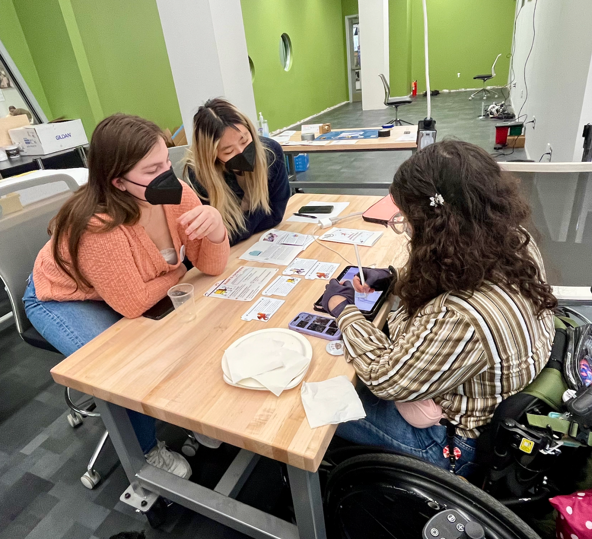

Welcome! To the Design an Inclusive Spaceship Collaborative Operation (DISCO)!
We are a collaborative design sprint event combining accessibility and speculative design to imagine inclusive futures!
If you are at a DISCO and looking for information about crew or ship components please go to our workshop section. Otherwise feel free to look through our website to learn more about the project!